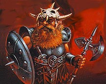

DWARF

Карлики - это короткие, коренастые полу-люди, известные отвратительным
характером и невероятной выносливостью. У карликов высокая сила и сложение,
но очень слабая проворность. Они не так проворны, как люди, но, обычно,
достаточно мудры, так как живут довольно долго.
Из Карликов получаются великолепные бойцы и священники, но очень посредственные
маги и воры.
Карлики очень стойки к магии, яду и болезням, но не умеют плавать, проще
сказать, что они не плавают, а ходят по дну (когда не тонут :-) ).
Все карлики видят в темноте, с помощью инфразрения.
Базовый экспириенс для Карликов:
Witch = 1250 Cleric = 1250 Warrior = 1250 Warlock = 1450